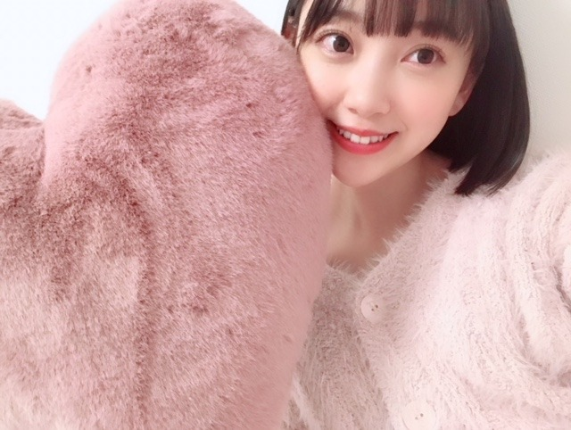
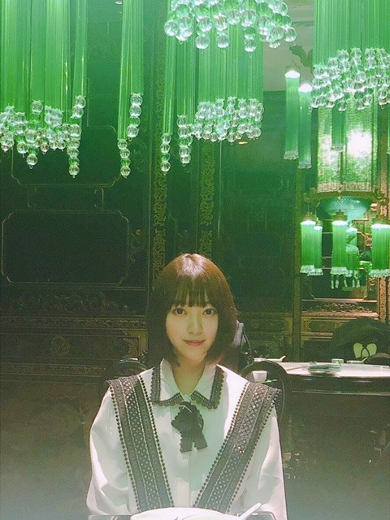

2018/1203Monくじを何気なく引いたらかわいいスノードームが当たりましたるんるん
12月になりましたね！
早く雪降らんかな〜☺︎
クリスマスソングを聴くだけで
気分がるんるんします


私の部屋のベッドにある
お気に入りクッション☺︎
肌触りのいいものがすきです！
そして上海での初ライブ
皆さん温かくて本当に楽しかったです
また海外でライブができるように頑張ります

飲茶ランチをメンバー数人でしたときに
ひなちまが撮ってくれたお気に入り写真！


楽しかった〜
謝謝☺︎☺︎
ではまた！
2018/12/03 20:36


コメント(421)
上海お疲れさまでした！
後輩の4期生のお見立て会に行ってきたよ(^^)
未央奈も後輩たちにいっぱい教えてあげてね（＾ω＾）
次の更新も楽しみにしてるね
気づけばもうちょっとで、平成最後のお正月だよ…
早いね！
体調に気を付けて頑張ってください！
ブログ更新ありがとう！
明日の若様卒業セレモニー、ライブビューイングだけど楽しみ！
頑張ってね！！
なんか未央奈らしい可愛いクッションだね
上海ライブお疲れ様
蘭世とみなみちゃんと楽しそうだね
I wish it could be Christmas everydayっていう曲が好きです。毎日クリスマスだったら良いのにっていう意味で、子供の声も入ってて可愛らしい曲です。
クリスマスは映画も音楽もワクワクするのばかりですよね。
海外での初単独ライブお疲れ様。
上海で飲茶食せて良かったね。
来年の海外公演も頑張ってね。
楽しそうでなによりです。
ブログ更新ありがとうございます。
ライブお疲れさんでした。明日の若の卒セレも頑張ってください。良い形でわかさまを送り出してきてください！
あと、今日も堀ちゃん可愛すぎ。ハートのクッション気持ちよさそう。これからも頑張ってください！
もぉ12月だね！
あと１ヶ月も無いで平成も終わるね！
なんか寂しい....
今年は楽しくもあったし悲しくもあったね！
乃木撮や写真集馬鹿売れ!!
さすが乃木坂46だ！！
悲しいのは卒業
なぁーちゃんや若月の他にもいるけどやっぱり
ずっと乃木坂を支えてきてくれたのはなーちゃんと若月〜だと僕は思う！
7年間ずっと辛いこともあっただろうけど頑張って来て平成の節目で卒業することになって悲しいけどなーちゃんが決めた事に反対する権利はないから卒業しても応援してます!!
皆で応援してるよ！
これからもいい思い出を作っていただきたいです
by大地
所で上海ライブお疲れ様でした！
まぁさすがに上海までは行けないから日本で応援してました！
写真可愛い
肌触りが柔らかくてモコモコしたやつが僕はめっちゃ好きです！
この辺で失礼します！謝謝
ﾊﾞｲﾊﾞｲ(ヾ(´・ω・｀)
乃木坂大好きです
上海お疲れ様でした＼(^o^)／
これからも頑張って(/･ω･)/
上海でのライブお疲れ様！
世界に通用するアイドルになるのを応援してるよ！
これから年末に向けて
忙しいだろうけど
体調に気をつけて頑張ってね！
上海でのライブ、大変おつかれさまでした。
クリスマスソング・・・ではないのですが、西野カナさんの『会いたくて会いたくて』が好きで、けっこう前からよく聴いております
でも、圧倒的に女性ファンの方が多いと聞いた気がするので、ライブに行ったことは無いです！
クッション、温かそう～！
僕は、アザラシとか海獣系の抱き枕が欲しいんだよね。
ちなみに今日お風呂入っていたら、急に目の前がぼやけて意識が途切れそうになったよ・・・・（笑）
疲労困憊かな、それとも睡眠不足かな。
温かくして早く寝なきゃ
ライブお疲れさま〜！
12月だって！早いね！もう今年終わる！受験だ！笑
体調に気をつけて〜！
あいほ
未央奈、今日も一日お疲れさまでした。
もう12月になっちゃったね。
あっという間に来ちゃいました。
街やお店に一足入ればクリスマスソングが流れてるし、雰囲気もそんな感じで。
社会人になって、クリスマスに何かあったかなーって思い返してみたけど、仕事のことばかりで。。
でも若いうちは仕事やってなんぼだと思うので、そんな年が続いてもまあいいかなって。
だけど、年末まで悔いのないように、日々精進していきたいなとも思います。今年の振り返りとか、来年に向けての目標とか。いろいろあるなって思う毎日です。
上海公演、お疲れさまでした。
無事帰ってきて、ひとまず安心してます。
上海でのライブはどうだったかな？
日本とはまた違った雰囲気で、演出方法も違うところとかあったのかな。未央奈的、ライブのここが良かった！って感想も待ってますねm(_ _)m
じゃあ、今回は短めで！
体調管理には気をつけて、元気よく年末まで駆け抜けていきましょー！！
ではでは、ねこでした。
チャァオ～～!☆彡
わぁああぁ～～～⤴️⤴️❕❤️❤️❤️❤️❤️笑顔❤️❤️❤️❤️❤️
みおちゃん❕・・・
また１段と綺麗ぃいいぃ～～⤴️⤴️❕❤️❤️❤️❤️❤️笑顔❤️❤️❤️❤️❤️
そのピンクに合わしたそのメイクがまた素敵です❕❤️❤️❤️❤️❤️笑顔❤️❤️❤️❤️❤️
飲茶の時のヘアスタイル、めっちゃ好みです❕❤️❤️❤️❤️❤️笑顔❤️❤️❤️❤️❤️
(*^▽^)/★*☆♪
☆大人しい、おすまし！より☆彡
ブログ更新、ありがとう。
上海ライブお疲れ様でした〜
これからも海外で沢山の思い出が作れると良いですね！
体調に気をつけてくださいね〜
またの更新、待ってます！
ブログ更新ありがとうございます。
上海公演、おつかれさまでした。中国での単独ライブも、大好評だった様子、何よりでしたね。
「謝謝‥‥」、最後の客席全面からの「ありがとう」の文字、感動ですね。MVの名場面を彷彿させる粋なサプライズ、遠く離れた私たちのもとまで、感動が届きました。
本場の中華料理はいかがでしたか？ 食べ過ぎて、お腹壊していませんか？
たくさんのことが学べた上海だったでしょうね。
明日は、日本武道館、若の最高の舞台を創り上げてくださいね。
ぅ応援してるうぅぅぅぅぞぅ！
スノードームと言えば、まりっかを思い出します。彼女もスノードーム好きだったと記憶しています。
上海公演、お疲れ様でしたー。だいぶ盛り上がったようですね！！中国人ファンの皆様にお返しのコンサートになったはず。これからも呼んでもらえますように。
本場の飲茶、やっぱり違いますか？最近は日本でもおいしい中華の店が増えてきましたが、自分で確かめないといけないかな？とも思います。
ではまた。
上海ライブお疲れ様でした。
上海お疲れ様ー！ちまの写真、何かエモくて良いね！
改めて海外公演でメンバーの中が深まったのかなぁ
早く雪降って欲しいね(#^.^#)
ライブ楽しくて良かったね(*^^*)
頑張ってね！
応援してるよ＼(*⌒0⌒)ｂ♪
写真可愛い(//∇//)
またね♪
未央奈ちゃん神推し
秀喜より！(≧▽≦)
ミッキー&フレンズのコンプリートボックスが
当たったよ（笑）
わたし達仲良しだね（笑）
上海ライブお疲れ様でした！
肌触りのいいものって最高だよね…！
ふわふわクッションとかベロア素材とかファーとか、自分の物だけじゃなくて、友達の物とかお店の物までついつい触ってしまいます…笑
写真は私服かな？すっごく可愛い♡オシャレなお店とマッチしてるように感じます︎☺︎
素敵な写真たちをありがとう！
スノードーム当たって良かったね！クリスマスの雑貨可愛くて私も好きです︎☺︎
昨日は755で堀ちゃんが返信してくれて、幸せな1日でした^ ^
堀ちゃんのファッションとか、ヘアメイクとか、画像付きでいっぱい詳しく知りたいなーって思ってるから、スタイルブックが出たら嬉しいです^ - ^
ブログの写真、ハートのクッションとニットカーデがめっちゃ合ってて可愛い♡
ピンクの世界✨
写真集見てても思ったけど、堀ちゃんはピンクが似合うなぁ。
髪がショートなぶん、くどくないしポップなかんじがします☺︎
上海ライブ、お疲れ様です☺︎
海外でも人気のある乃木坂、やっぱりすごい^ - ^
写真もモードな雰囲気で可愛い♡
何か美味しいもの食べた？
私も同じくクリスマスソング聴きまくってました 笑
おススメのクリスマスソング教えてほしい！
テスト頑張ります♪
では。
クリスマスソングだとHALCALIのストロベリーチップスが好きです。
このブログの写真もモバメの写真も微笑みの愛され感がすさまじいですね。
BUBKA読みました。最初のページの見据えた表情がとても良いです。
堀さんはもはや向上心の女神ですね。芝居をやるのは堀さん自身のを、ダンスに力を入れたいのはグループの”らしさ”を拡大していくってことなのかなと思って、これからが楽しみになりました。センターについて言及していたのも心強かったです。
インタビュー中「ダメかと思ったけど良いと言って貰えた」って流れが何度も登場して、堀さんが不安を感じるのはより多い”気付き”でパフォーマンスを上げるためで、尻込みするためじゃないってことなんだなって思いました。
先日失恋ショコラティエ借りて全話見まして。主人公の独白は渡仏前は現状維持を耐えるためのもので後は変える行動のためのものに変わっていった気がして、それと関連付けてそう思ってしまいました。
にしても失恋ショコラティエ超面白かったです。紗絵子さんの小悪魔ぶりが楽しかったし、店の客と視聴者が美味しく食べてたのは爽太の片思いだったから最終話でああなったのかと関心しました。あと急に若月さんが出て驚きました。
若月さんといえば、卒業セレモニー頑張ってくださいね。帰国してすぐで疲れもあるかもしれませんけど、ライブビューイングで見ながら応援してます。忙しい１２月、行く先々で沢山の笑顔に出会えるといいですね。
お疲れ様でした！
年はほぼ終わりだよね、
次の年を楽しみにしているわ、
今年は非常に良いと思う。
未央奈何時も頑張ってね、
何時迄も応援しているよ。
ずっと大好き！
飲茶フォト 不思議なレトロ感あっていい写真だね。
年末頑張ろー おー
BUBKAの記事の感想で読まれました！
レコメン！もようちゃんマンで送ってるから気にしてて！
いつもありがとう
3枚目の写真、ジャケ写とかでありそうな感じやね〜
雰囲気も良さそうなお店だし飲茶美味しかったんやろな〜
いつか行ってみたい、、
お元気ですか？ 海外ライブお疲れさまでした｡続いての公演頑張ってね｡ 年末に向かって更に忙しくなりますね｡健康第一でお願いいたします。ホワイトクリスマスは好きです｡以前はクリスマスカードに雪のスイスの写真を送りました｡けれども日本の雪景色の温泉の良さも解ってきました。堀ったんの温泉めぐりは今は忙しいから来年の目標になるかな｡
先日バラエティ番組で未央奈さるを観ましたウッキーが懐かしい｡今日のブログ写真のグリーンが綺麗です｡ブログの更新ありがとうございます｡
では またね ｷｷ ｡
コメントする